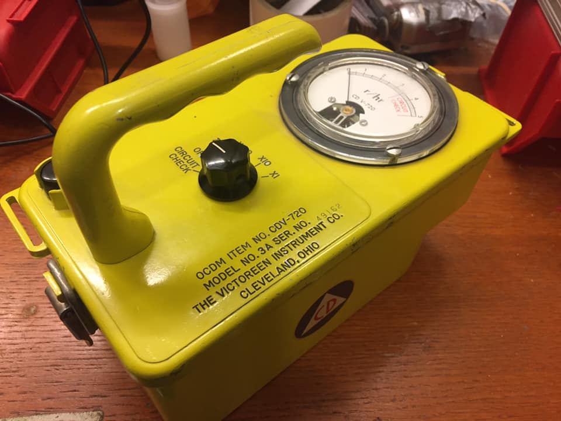

CDV-720 3A High Range Radiation Meter
This post is cross-posted to my ham-radio specific blog, kk9jef.wordpress.com
I went to the WCRA Hamfest in St. Charles this weekend in search of test gear (I had been fortunate to find a working Heathkit IM-2420 Frequency Counter there a couple years ago). I didn't come away with anything of that sort, but I did scoop up this yellow beauty:

This beaut is a CDV-720 3A High Range Radiation Meter. It's a remnant of the early cold war, the beginning of the atomic age - thousands were produced in the late fifties and early sixties by the Victoreen Company out of Cleveland Ohio. It's got a cast aluminum case that feels like it's made to survive a bomb, and maybe it was. The manual notes that:
It is designed to be used by radiological Civil Defense personnel in determining radioactive contamination levels that may result form an enemy attack or other nuclear disaster.
The really staggering thing about this meter is the range it covers: up to 500 Roentgens/hr. At that rate, your goose is cooked in a matter of minutes (first metaphorically, then literally).
Here's a brief video overview of the meter, its circuitry, and the scary-high levels of radiation that it's meant to measure: